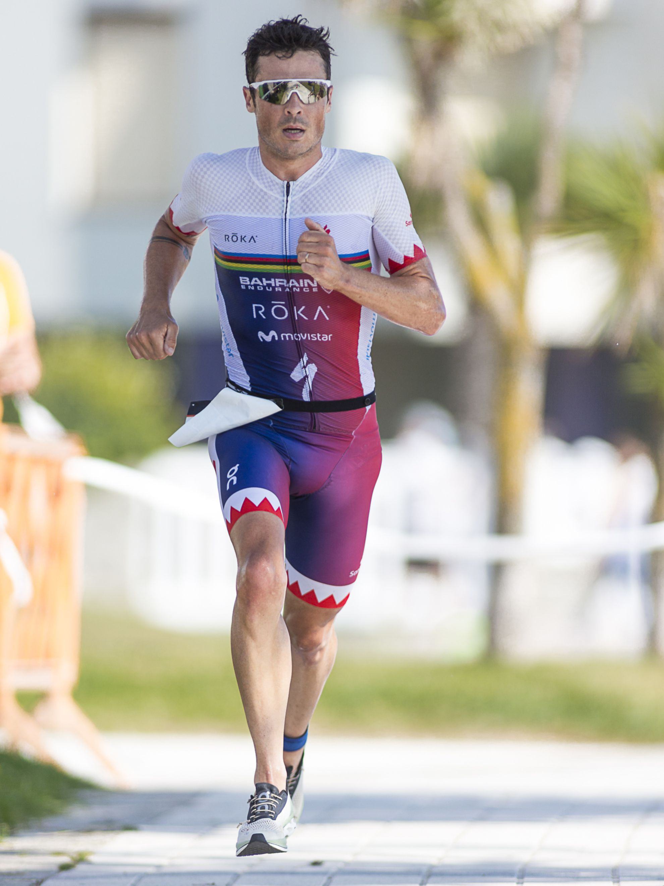
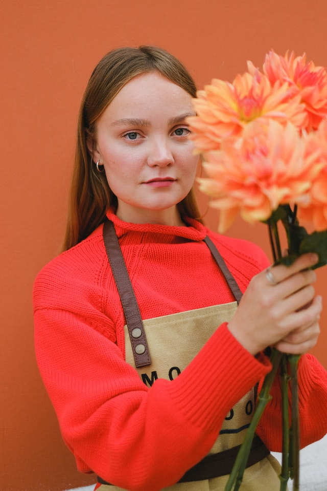

Audience Description
This page is designed for people who are vegetarian and are looking for vegan restaurants. It is also for people looking for supplements, vitamins and a job.
Persona 1
-
Name: Christian Steward
-
Age: 33 years
-
Occupation: High performance athlete
He is a person who is dedicated to sports and is a vegetarian.
Persona 2
-
Name: Rosie Steel
-
Age: 25 years
-
Occupation: Florist
She cares about the environment and cares about her health and that of her family.
